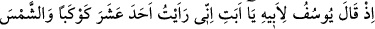
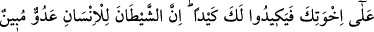
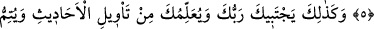
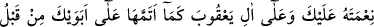
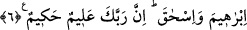

YÛSUF’UN RÜYASI
4. Hani bir zaman Yûsuf babasına demişti ki: “Babacığım, ben rüyamda on bir
yıldızla güneşi ve ayı gördüm; onları bana secde ederlerken gördüm.”
5. Babası: “Yavrucuğum, rüyânı kardeşlerine anlatma; sonra sana bir tuzak
kurarlar. Çünkü şeytan insana apaçık bir düşmandır.” dedi.
6. “İşte böylece Rabbin seni seçecek ve sana rüyaların yorumunu öğretecek ve
daha önce iki atan İbrahim ve İshak’a nimetini tamamladığı gibi sana ve Ya’kub
soyuna da nimetini tamamlayacaktır. Çünkü Rabbin çok iyi bilendir, hikmet
sahibidir.”
Ey Muhammed, hatırla o zamanı “Hani bir zaman Yûsuf babasına” İbrahim oğlu
İshak oğlu Yâkub (a.s.)’a “demişti ki:”
Yûsuf lafzı, İbrânîce’dir. Âdem (a.s.)’ın konuştuğu dil Süryânîce olduğu gibi İbrânice
de İbrahim (a.s.)’ın dilidir.
Süyûtî der ki: “Süryânî lafzı, Nuh (a.s.) ile kavmi tufanda boğulmazdan önce
yaşadıkları bölgenin adı olan Süryâne’ye mensub demektir. Dili Arapça olan Cürhüm
adlı şahsın dışında bu kabilenin hepsi Süryanîce konuşurdu.
Envâru’l-meşarık’ta şöyle der: “Güzel tesadüflerden biri de sözlükte esef lâfzının
hüzün, esif lâfzının da köle mânâsına gelmesidir. Her ikisi de tesâdüfen Yûsuf
kelimesinde toplanmıştır.”
Bu isimlerin türetilmiş (müştak) olduğu görüşüne meyleden bazıları şöyle der:
“Yâkub’a bu ismin verilmesinin sebebi şudur: Yâkub ile Iys/Esav ikizdiler. Analarının
karnında kavga ettiler. Çünkü Yâkub önce çıkmak istedi, fakat Iys buna mâni oldu ve:
‘Benden önce çıkacak olursan anamın karnında deprenirim ve onu öldürürüm.’ dedi.
Bunun üzerine Yâkub geri çekildi ve Iys çıktı. Yâkub da onun ökçesini tutarak ondan
sonra çıktı. Bu sebeple “Yâkub” adını aldı. Iys’a da isyan edip Yâkub’dan önce çıktığı
için “Iys” adı verildi.